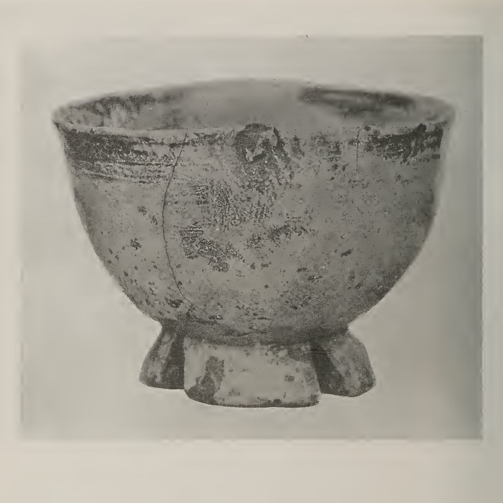

Aesthetic ZEN
beauty, practice, and leaving enough alone
, Zangetsu-tei, Omote, Senke, Kyoto")
Beauty
Beauty is not a separate thing, an afterthought, an extra add-on. If we speak of appreciation, then we aren't so trapped in ideas of how beauty should look or sound. Creative expression is one way in which practice becomes visible, as is seeing the good in others.
When a room is quiet despite the noise, when our words are not trying too hard, when an object is allowed to lean in its own direction, something in us can settle. Not because something has been made perfect, but because enough has been left alone.
This matters for Zen. The way we approach practice, arrange a place, walk through an open a door, sit beside a friend, allow gaps for ourselves and others to feel into, can invite us back to into the ordinary world. Aesthetic practice is not about making life look beautiful or elegant. It is about noticing what helps.
Aesthetic Zen
The following seven aspects are often used to describe Japanese and Zen-related aesthetics. They are not rules. They are ways of seeing what gives life. Aesthetic sensibility touches ethics and how it is possible to be in the world.
Life is not perfectly even. A hand-drawn circle, a slightly off-centre flower, an uneven stone path, or a pause in conversation can feel more alive than perfect symmetry. In meditation, irregularity is not a problem to fix. Thoughts wander, feelings rise and fall, the body shifts, and practice includes all of this.
Kanso (簡素)
simplicitySimplicity is not emptiness for its own sake. It is the removal of what is unnecessary so the essential can be felt. In design, this might mean fewer words or colours, more space, and only decoration that serves the whole. In practice, it is close to just sitting: body, breath, mind, and the room, with nothing more required.
Koko (考古)
basic, weatheredKoko points toward what is austere, basic, aged, worn by time. A much-used cushion, an old timber floor, a plain bowl with a chip, or a stone shaped by weather can carry this quality. In design, it suggests honest materials and a respect for age. In practice, it means seeing what is fundamental from timeless past to ancient future.
Shizen (自然)
naturalness, without pretenceShizen is naturalness without artificiality. It does not mean careless or accidental. A room, garden, or email may be artfully put together without being forced. In Zen practice, this is the sense of letting meditation be meditation.
Yūgen (幽玄)
subtle, understated graceYūgen is the beauty of what is suggested but not fully explained. It is depth without display. A shadow, a hint of the moon throught the curtains, a few words, or a simple bow may say more by not saying everything. In design, in communication, yūgen encourages restraint. In practice, it reminds us that sometimes over-explaining really doesn't help.
Datsuzoku (脱俗)
freedom from conventionDatsuzoku is a release from the usual pattern. It is not rebellion for its own sake, but rather liveliness, freshness, vividness. An interaction may breathe because it does not follow every rule of conversational convention. A life may breathe because we pause before repeating the same old story about ourselves and others. Practice gives us a little room to step outside of convention or habit.
Seijaku (静寂)
tranquillity, silenceSeijaku is quietness, but not dead quietness. It is living stillness. A room can hold it. A garden can hold it. A person sitting upright and relaxed can hold it. In design, it appears as calm rhythm, adequate space, and nothing shouting for attention.
Fine Art
The idea for including aesthetics came from Zen and the Fine Arts by Shin'ichi Hisamatsu. This is a study of Zen in relation to painting, calligraphy, tea, gardens, ceramics, architecture, theatre, and other arts. You can see this incredible book, which has hundreds of photographs, online at the Internet Archive or click to download a pdf from Terebess.
Hisamatsu is not only interested in traditional Zen art, he is interested in the form of Zen: simplicity and understatement, old surfaces, the open interval; pacing, appreciation and respect; the room that does not need to explain itself. The images on this page come from this book.

Design
Here is a simple way to bring these aesthetics into whatever we are doing. This can be tidying a room, creating a website, writing a letter to a friend, or a daily ritual like practice or making breakfast.
- Begin with one clear intention.
- Remove one thing that does not need to be there.
- Give the important thing more space.
- Allow one irregular, human element to remain.
- Use natural, durable, or honest materials where you can.
- Let the design suggest more than it explains.
- Stop before it becomes clever.
Then sit with it quietly for a moment. Notice whether it invites friendliness, steadiness, warmth.
Further
The seven terms above are from the list of Zen aesthetic principles on wikipedia: Japanese aesthetics. For broader background, see the Stanford Encyclopedia of Philosophy entry on Japanese aesthetics, the design reflections at Presentation Zen, and Shin'ichi Hisamatsu's Zen and the Fine Arts.